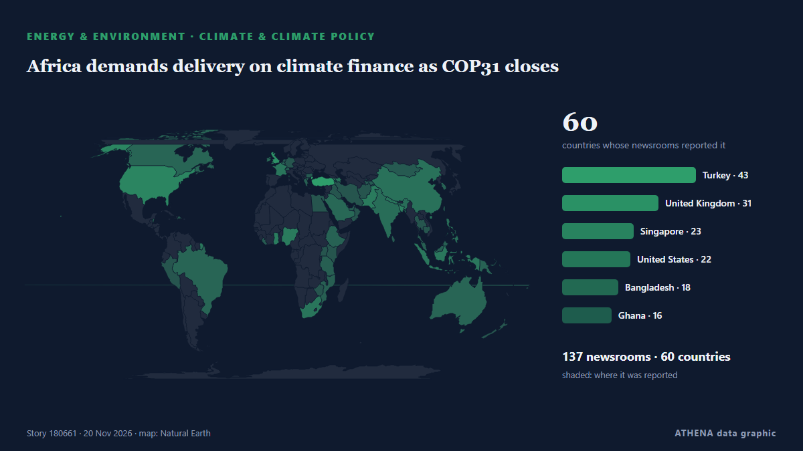

Africa demands delivery on climate finance as COP31 closes

By Joyce Gyekye African countries have intensified calls for developed nations to honour their climate finance commitments, insisting that the outcome of COP31 must deliver concrete action on… από GBC Ghana Online
Αναφέρθηκε ανεξάρτητα από 138 μέσα σε 60 χώρες από τις 7 Νοε, πρώτο το The Business Standard (Bangladesh) (working feed)· η κάλυψη εξασθενεί. Το ATHENA εκτιμά τον κίνδυνο μέτριο (3.5/10), κυρίως λόγω της σοβαρότητάς του και της εμβέλειάς του. Βεβαιότητα 91% (υψηλή): το επιβεβαιώνουν 138 ανεξάρτητα μέσα, μέση αξιοπιστία 73%. Μέσα ανά χώρα: Ηνωμένο Βασίλειο (5), Ηνωμένες Πολιτείες (4), Τουρκία (4). Κάλυψη: 7 Νοε έως 20 Νοε, 314 ώρες.
Γιατί έχει σημασία: Οι εξελίξεις στην ενέργεια και τους πόρους επηρεάζουν τις τιμές καυσίμων και ρεύματος, την ασφάλεια εφοδιασμού και τους κλιματικούς στόχους.
Τι άλλαξε: 8 νέες αναφορές από 8 μέσα στο 24ωρο έως 20 Νοε.
Πρώτη διατύπωση: Bangladesh CSOs demand continued climate finance beyond LDC graduation ahead of COP31
ΑυτοματοποιημένοΕπιλέχθηκε, ομαδοποιήθηκε και βαθμολογήθηκε με τη δημοσιευμένη μέθοδο της ATHENA από 30 ανεξάρτητα μέσα. Ο τίτλος είναι του μέσου· οι προτάσεις της ATHENA ακολουθούν σταθερά πρότυπα - δεν τις γράφει παραγωγική ΤΝ. Πώς λειτουργεί →
Πώς να διαβάσετε αυτή τη σελίδα
- Τι διαβάζετε
- 138 μέσα σε 60 χώρες ανέφεραν αυτό το γεγονός. Οι αναφορές παρακάτω εμφανίζονται με τη σειρά που δημοσιεύτηκαν· κάθε τίτλος ανοίγει το αρχικό άρθρο. Το ATHENA δεν γράφει δικά του ρεπορτάζ.
- Η εκτίμησή μας
- Για την καταγραφή — Οι αναφορές περιγράφουν ένα ολοκληρωμένο, εσωτερικό, εμπορικό ή προσωπικό ζήτημα. Το καταγράφουμε ώστε να βλέπετε ποιος το ανέφερε και πότε. Δεν παρακολουθούμε εδώ κίνδυνο ευρύτερης σύγκρουσης.
- Πόσα στοιχεία υπάρχουν
- Επαρκής Αρκετά ανεξάρτητα μέσα συμφωνούν, αλλά η εικόνα μπορεί ακόμη να αλλάξει.
Αφού αφαιρεθούν οι επαναλήψεις, τα άσχετα και τα παλιά στοιχεία, υπολογίζονται 18 από τις 40 αναφορές που παρατίθενται· το 75% των τίτλων αντιστοιχεί στο γεγονός.
- Τι δεν σημαίνει
- Το ATHENA μετρά πώς καλύπτεται ένα γεγονός, όχι αν είναι αληθές. Δεν είναι πρόβλεψη, κρίση για το ποιος έχει δίκιο ή συμβουλή.
- Τι θα την άλλαζε
- Αναφορές από άλλα ανεξάρτητα μέσα που δείχνουν διαφορετική εξέλιξη, ή σαφής επιβεβαίωση ή διάψευση από επίσημη πηγή.
Εκτίμηση R2 · ανανεώνεται με κάθε ενημέρωση της σελίδας. Το ATHENA δεν έχει δημοσιεύσει ακόμη ιστορικό επιδόσεων για αυτές τις εκτιμήσεις· όταν το κάνει, θα συνδέεται εδώ.
Με μια ματιά
Επιλέγεται, βαθμολογείται και γράφεται από τη δημοσιευμένη μεθοδολογία του ATHENA. Κανένας συντάκτης δεν παρεμβαίνει σε μεμονωμένα γεγονότα. Πώς παράγεται ›
| 07 Nov 12:50 UTC | 1 |
|---|---|
| 08 Nov 00:50 UTC | 0 |
| 08 Nov 12:50 UTC | 2 |
| 09 Nov 00:50 UTC | 23 |
| 09 Nov 12:50 UTC | 27 |
| 10 Nov 00:50 UTC | 19 |
| 10 Nov 12:50 UTC | 41 |
| 11 Nov 00:50 UTC | 70 |
| 11 Nov 12:50 UTC | 43 |
| 12 Nov 00:50 UTC | 32 |
| 12 Nov 12:50 UTC | 18 |
| 13 Nov 00:50 UTC | 19 |
| 13 Nov 12:50 UTC | 14 |
| 14 Nov 00:50 UTC | 8 |
| 14 Nov 12:50 UTC | 9 |
| 15 Nov 00:50 UTC | 3 |
| 15 Nov 12:50 UTC | 1 |
| 16 Nov 00:50 UTC | 16 |
| 16 Nov 12:50 UTC | 9 |
| 17 Nov 00:50 UTC | 7 |
| 17 Nov 12:50 UTC | 9 |
| 18 Nov 00:50 UTC | 7 |
| 18 Nov 12:50 UTC | 7 |
| 19 Nov 00:50 UTC | 6 |
| 19 Nov 12:50 UTC | 2 |
| 20 Nov 00:50 UTC | 4 |
| 20 Nov 12:50 UTC | 4 |
| 10 Nov 14:46 UTC | 4.5 |
|---|---|
| 10 Nov 20:09 UTC | 4.6 |
| 11 Nov 02:31 UTC | 4.6 |
| 11 Nov 02:40 UTC | 5.2 |
| 11 Nov 10:58 UTC | 4.6 |
| 11 Nov 13:26 UTC | 5.1 |
| 11 Nov 17:21 UTC | 4.7 |
| 11 Nov 20:46 UTC | 4.7 |
| 12 Nov 11:58 UTC | 4.6 |
| 12 Nov 16:25 UTC | 3.8 |
| 20 Nov 19:31 UTC | 3.5 |
Γιατί αυτοί οι αριθμοί
Σημασία
Κίνδυνος
Βεβαιότητα
Η κάλυψη — ποιος το ανέφερε και πότε
ο τίτλος όπως δημοσιεύτηκε · ανοίγει το πρωτότυπο- The Business Standard (Bangladesh) (working feed) · ΜπανγκλαντέςBangladesh CSOs demand continued climate finance beyond LDC graduation ahead of COP31
- Guardian Environment · Ηνωμένο ΒασίλειοNicola Jennings on Cop31 in Turkey – cartoon
- Al-Monitor · Ηνωμένες ΠολιτείεςClimate talks should focus on implementation, not new targets, Singapore says
- Cyprus Mail · ΚύπροςWill realism shape the COP31 outcome?
- The Business Standard (Bangladesh) (working feed) · ΜπανγκλαντέςThe $1.3 trillion climate finance promise: What does it mean for Bangladesh?
- The National · Ηνωμένα Αραβικά ΕμιράταCop31 in Turkey must bring water to the centre of climate action
- Cyprus Mail · ΚύπροςWar, AI and US absence cast shadow over COP31 climate talks
- Carbon Brief · Ηνωμένο ΒασίλειοQ&A: What is the Belém-Antalya mechanism for a ‘just transition’?
- Express Tribune · ΠακιστάνCOP31 summit leaders urge world to move faster on climate
- CBC News (alternative feed) · ΚαναδάςCanada's credibility on the line at summit as it defends fossil fuel expansion while trumpeting clean energy
- Anadolu Agency (English) · Τουρκία‘Most courageous leaders choose peace,’ WHO chief says on Gaza
- Anadolu Agency (English) · ΤουρκίαCOP31 President Murat Kurum calls for turning climate pledges into concrete action
- MIT Technology Review · Ηνωμένες ΠολιτείεςThe climate case for AI has not been made
- NPR · Ηνωμένες ΠολιτείεςU.N. climate talks begin today. Here are 3 things to know
- BusinessWorld · ΦιλιππίνεςThe El Niño Paradox: Managing hidden climate risks to protect corporate value
- TRT World · ΤουρκίαCOP31 President Kurum urges action to turn climate pledges into results
- CNA (Channel NewsAsia) · ΣιγκαπούρηCOP31 opens with leaders under pressure to tackle climate crisis
- France 24 English · ΓαλλίαCOP31 opens with leaders under pressure to tackle climate crisis
- Premium Times · ΝιγηρίαANALYSIS: COP31 puts climate finance, fossil fuel transition, energy ambitions to test
- Oman Observer · ΟμάνCOP31 summit leaders urge world to move faster on climate
- The Rio Times · ΒραζιλίαTurkey Opens UN Climate Talks, Leaders Next
- Daily Maverick · Νότια ΑφρικήCOP31 summit leaders urge world to “move faster” on climate
- MyJoyOnline · ΓκάναCOP31 opens under Super El Niño threat as developing nations demand urgent action on climate finance
- Cyprus Mail · ΚύπροςCOP31 to open in Turkey, with climate goals under pressure from war and AI
- OilPrice.com · Ηνωμένο ΒασίλειοIEA Backs Electrification Efforts at COP31 Climate Summit
- AzerNews · ΑζερμπαϊτζάνFour countries advance plans for major Caspian-to-Europe green energy link
- The Kathmandu Post · ΝεπάλWagle heads to COP31 to press Nepal’s climate agenda
- BusinessWorld · ΦιλιππίνεςClimate finance, tech aid top PHL agenda at Turkey COP31
- APA (English) · ΑζερμπαϊτζάνAzerbaijan presents Caspian environmental issues and climate initiatives at COP31
- RTÉ News · Ιρλανδία'We have to act now' - views from the queue at COP31
- Phys.org · Ηνωμένο ΒασίλειοCOP31 opens with leaders under pressure to tackle climate crisis
- France 24 English · ΓαλλίαCOP31: A focus on electrification as extreme weather events shake the world
- Anadolu Agency (English) · Τουρκία102 leaders from 6 continents to attend COP31 climate summit in Türkiye
- Premium Times · ΝιγηρίαCOP31 opens in Türkiye with focus on climate finance, implementation
- Just Security · Ηνωμένες ΠολιτείεςWhat Experts Will Be Watching as COP31 Gets Underway
- Club of Mozambique · ΜοζαμβίκηCOP31 summit leaders urge world to move faster on climate
- France 24 English · ΓαλλίαCOP31: Betting on electricity to break the climate deadlock
- ABC News Australia · ΑυστραλίαCOP31 summit targets major electrification push as 1.5C goal slips away
- OilPrice.com · Ηνωμένο ΒασίλειοCOP31 Opens in Antalya With a UN Push for Faster Climate Action
- GBC Ghana Online · ΓκάναAfrica demands delivery on climate finance as COP31 closes